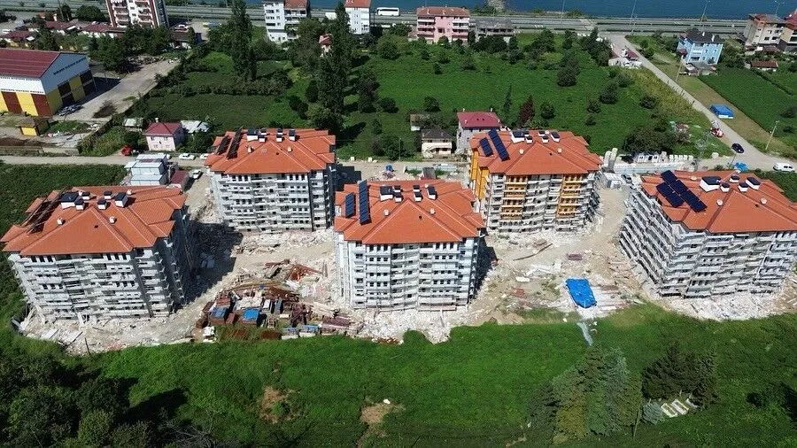

Öne Çıkan Projeler

Anahtar Teslim
Tamek Salihli Salça Fabrikası
Proje Yönetimi.

Kaba Yapı İşleri
Tamek Salihli Fabrikası Arıtma Tesisi
Proje Yönetimi

İnce İşler
Trabzon İli Of ilçesi TOKİ 103 Daire
Proje Yönetimi.